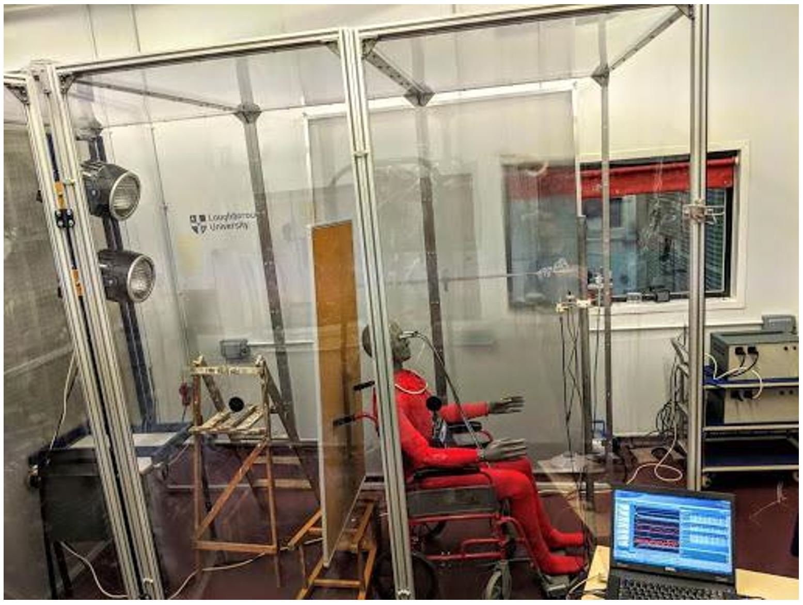
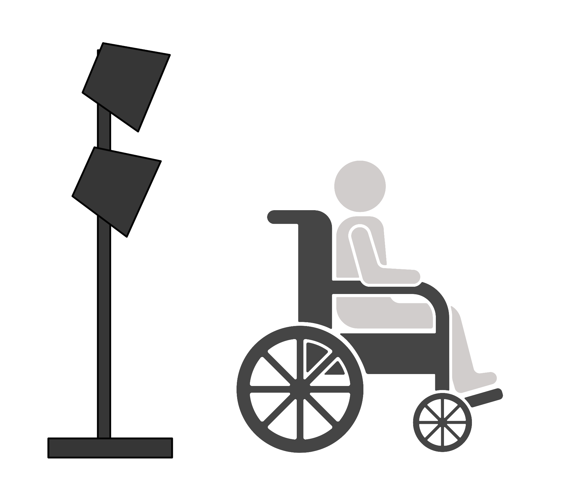
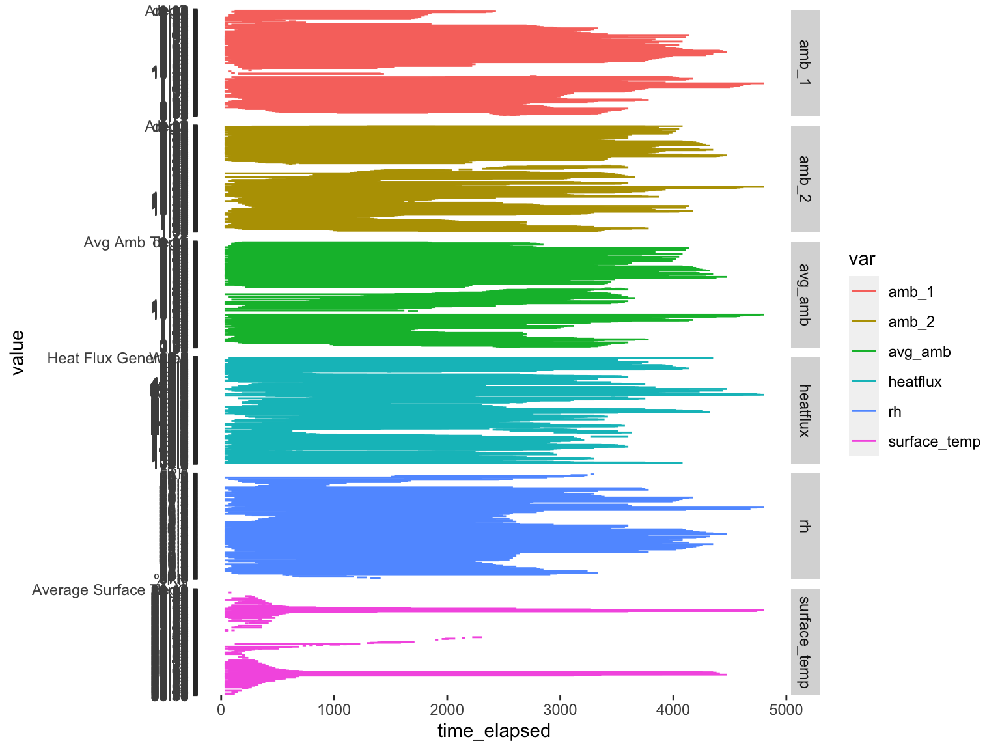

Last updated: 2022-01-19
Checks: 6 1
Knit directory: HairManikin_manuscript/
This reproducible R Markdown analysis was created with workflowr (version 1.6.2). The Checks tab describes the reproducibility checks that were applied when the results were created. The Past versions tab lists the development history.
The R Markdown file has unstaged changes. To know which version of the R Markdown file created these results, you’ll want to first commit it to the Git repo. If you’re still working on the analysis, you can ignore this warning. When you’re finished, you can run wflow_publish to commit the R Markdown file and build the HTML.
Great job! The global environment was empty. Objects defined in the global environment can affect the analysis in your R Markdown file in unknown ways. For reproduciblity it’s best to always run the code in an empty environment.
The command set.seed(20211024) was run prior to running the code in the R Markdown file. Setting a seed ensures that any results that rely on randomness, e.g. subsampling or permutations, are reproducible.
Great job! Recording the operating system, R version, and package versions is critical for reproducibility.
Nice! There were no cached chunks for this analysis, so you can be confident that you successfully produced the results during this run.
Great job! Using relative paths to the files within your workflowr project makes it easier to run your code on other machines.
Great! You are using Git for version control. Tracking code development and connecting the code version to the results is critical for reproducibility.
The results in this page were generated with repository version bb99f1d. See the Past versions tab to see a history of the changes made to the R Markdown and HTML files.
Note that you need to be careful to ensure that all relevant files for the analysis have been committed to Git prior to generating the results (you can use wflow_publish or wflow_git_commit). workflowr only checks the R Markdown file, but you know if there are other scripts or data files that it depends on. Below is the status of the Git repository when the results were generated:
Ignored files:
Ignored: .DS_Store
Ignored: .RData
Ignored: .Rhistory
Ignored: .Rproj.user/
Ignored: analysis/figure/
Ignored: data/.DS_Store
Ignored: data/.Rhistory
Ignored: data/current/.DS_Store
Ignored: data/raw_manikin_output/.DS_Store
Untracked files:
Untracked: output/plt_heatloss_line.png
Untracked: output/plt_influx_line.png
Unstaged changes:
Modified: analysis/_site.yml
Modified: analysis/analysis.Rmd
Modified: analysis/experimental-set-up.Rmd
Note that any generated files, e.g. HTML, png, CSS, etc., are not included in this status report because it is ok for generated content to have uncommitted changes.
These are the previous versions of the repository in which changes were made to the R Markdown (analysis/experimental-set-up.Rmd) and HTML (docs/experimental-set-up.html) files. If you’ve configured a remote Git repository (see ?wflow_git_remote), click on the hyperlinks in the table below to view the files as they were in that past version.
| File | Version | Author | Date | Message |
|---|---|---|---|---|
| Rmd | bb99f1d | Tina Lasisi | 2022-01-08 | Update analysis.rmd + add data |
| Rmd | 680aafe | Ginawsy | 2021-12-26 | change file of analysis |
| Rmd | 9feaa00 | Tina Lasisi | 2021-11-11 | Updated data |
| html | 700233b | Tina Lasisi | 2021-10-24 | Build site. |
| Rmd | 6ab220a | Tina Lasisi | 2021-10-24 | update images |
| html | b7aa967 | Tina Lasisi | 2021-10-24 | Build site. |
| Rmd | 6a6f477 | Tina Lasisi | 2021-10-24 | update images |
| html | b319b9e | Tina Lasisi | 2021-10-24 | Build site. |
| Rmd | 68a2c58 | Tina Lasisi | 2021-10-24 | updating website with experimental set up |
In brief, the experiments were carried out in a climate controlled chamber at the University of Loughborough (UK) using a full-body thermal manikin with 20 independently controllable zones. Human hair wigs ranging from straight to tightly curled were used to test the effect of hair on heat gain/loss in a number of conditions.
The experimental variables were: - head covering (no wig, straight wig, moderately curled wig, tightly curled wig) - radiation (on vs. off) - wind speed (0.3m/s, 1m/s, 2.5m/s) - evaporation (manikin with dry scalp vs. manikin with wet scalp)
Dry heat resistance experiments were carried out from October to November 2018 in a climate controlled chamber with a custom-built wind tunnel (see below).
knitr::include_graphics("assets/manikin-chamber-setup.jpeg", error = FALSE)
| Version | Author | Date |
|---|---|---|
| afab42a | Tina Lasisi | 2021-10-24 |
knitr::include_graphics("assets/manikin-chamber-setup-diagram.png", error = FALSE)
| Version | Author | Date |
|---|---|---|
| c5d6198 | Tina Lasisi | 2021-10-24 |
The raw data from the manikin is structured as follows
raw_manikin <- read_csv(F("data/raw_manikin_output/round_1/HighCurv_RadOff_wind0_3 (run with new conditions).csv"), skip = 16) %>%
clean_names()
head(raw_manikin)# A tibble: 6 × 79
x1 x2 face_3 head_4 r_up_arm_fr_5 r_up_arm_bk_6 l_up_arm_fr_7
<chr> <chr> <chr> <chr> <chr> <chr> <chr>
1 Time Clock Averag… Averag… Average Surf… Average Surf… Average Surf…
2 Seconds <NA> degC degC degC degC degC
3 30.0117166 15:27:08 37.99 37.96 37.94 37.97 37.95
4 60.0264333 15:27:38 37.98 37.95 37.96 37.97 37.96
5 90.04015 15:28:08 37.96 37.95 37.96 37.97 37.97
6 120.0548667 15:28:38 37.94 37.94 37.97 37.97 37.98
# … with 72 more variables: l_up_arm_bk_8 <chr>, r_forearm_fr_9 <chr>,
# r_forearm_bk_10 <chr>, l_forearm_fr_11 <chr>, l_forearm_bk_12 <chr>,
# r_hand_13 <chr>, l_hand_14 <chr>, upper_chest_15 <chr>, shoulders_16 <chr>,
# stomach_17 <chr>, mid_back_18 <chr>, waist_19 <chr>, lower_back_20 <chr>,
# r_up_thigh_fr_21 <chr>, r_up_thigh_grd_22 <chr>, r_up_thigh_bk_23 <chr>,
# l_up_thigh_fr_24 <chr>, l_up_thigh_grd_25 <chr>, l_up_thigh_bk_26 <chr>,
# r_lwr_thigh_fr_27 <chr>, r_lwr_thigh_bk_28 <chr>, …The data can be cleaned using the following pipeline.
library(lubridate)
library(fs)
data_dir1 <- F("data/raw_manikin_output/round_1")
data_dir2 <- F("data/raw_manikin_output/round_2")
data_dir3 <- F("data/raw_manikin_output/round_3")
round1 <- fs::dir_ls(data_dir1, regexp = "\\.csv$")
round2 <- fs::dir_ls(data_dir2, regexp = "\\.csv$")
round3 <- fs::dir_ls(data_dir3, regexp = "\\.csv$")
round<-c(round1,round2,round3)
raw_manikin<- round %>%
map_dfr(read_csv,.id="source",skip=16)%>%
clean_names() %>%
select(c(source, x1, x2, contains("head"), ambient_71:ambient_74)) %>%
rename(filepath = source,
time_elapsed = x1,
time_hms = x2,
surface_temp = head_4,
heatflux = head_38,
avg_amb= ambient_71,
amb_1 = ambient_72,
amb_2 = ambient_73,
rh = ambient_74)%>%
slice(-(1:2)) %>%
as_tibble() %>%
mutate(time_hms = hms(time_hms)) %>%
mutate(time_elapsed = dseconds(time_elapsed)) %>%
select(time_elapsed, time_hms, everything())
raw_manikin$round=substr(raw_manikin$filepath,regexpr("round",raw_manikin$filepath),regexpr("round",raw_manikin$filepath)+6)
raw_manikin$filepath <- sub( ".*output/","", raw_manikin$filepath)
head(raw_manikin)# A tibble: 6 × 10
time_elapsed time_hms filepath surface_temp heatflux avg_amb
<Duration> <Period> <chr> <chr> <chr> <chr>
1 30.0117166s 15H 27M 8S round_1… 37.96 87.0 1.76
2 60.0264333s (~1 minutes) 15H 27M 38S round_1… 37.95 90.4 1.72
3 90.04015s (~1.5 minutes) 15H 28M 8S round_1… 37.95 92.0 1.67
4 120.0548667s (~2 minutes) 15H 28M 38S round_1… 37.94 93.7 1.62
5 150.0695835s (~2.5 minutes) 15H 29M 8S round_1… 37.94 95.0 1.57
6 180.0843002s (~3 minutes) 15H 29M 38S round_1… 37.94 96.7 1.53
# … with 4 more variables: amb_1 <chr>, amb_2 <chr>, rh <chr>, round <chr>Since we are only interested in the head, all other zones have been dropped. The variables are as follows:
time_elapsed (in seconds) describes how long the experiment has been runningsurface_temp (deg C) describes surface temperature for head zoneheatflux (W/m2) describes heat loss in watts per meter square.avg_amb (deg C) describes average ambient temperature based on two measurementsamb_1 (deg C) first ambient temperature sensoramb_2 (deg C) second ambient temperature sensorrh (percentage) describes relative humidity in the chamber.raw_manikin_long <- raw_manikin %>%
pivot_longer(cols = surface_temp:rh, names_to = "var")raw_manikin_long %>%
ggplot(aes(x = time_elapsed,
y = value,
col = var)) +
geom_line() +
facet_grid(var ~ ., scales = "free")
| Version | Author | Date |
|---|---|---|
| b319b9e | Tina Lasisi | 2021-10-24 |
A stable period is then chosen to average.
Some information required for the calculations includes the Area of skin surface on the manikin (Ask), which is 0.0978 in meters squared.
start_time_mins = 15
end_time_mins = 40
area = 0.0978
start_time = start_time_mins*60
end_time = end_time_mins*60
# raw_manikin %>%
# filter(time_elapsed > start_time & time_elapsed < end_time) %>%
# mutate(heat_resistance = (surface_temp-avg_amb)/ max(0.01, heatflux)) %>%
# mutate(clo = heat_resistance/0.155)
# Two additional variables are calculated: heat_resistance and clo. Both are measures of insulation.
Heat resistance is calculated from the difference between the surface temperature and the ambient temperature
Other calculations:
Net solar influx (W/m2) is calculated as:
\[heatflux_{(radiation)}- heatflux_{(no \ radiation)}\]
temperature correction for 30C (no radiation) is calculated as:
\[5/heat\ resistance_{(no \ radiation)} \] temperature correction for 30C (radiation) is calculated as:
\[temp\ corrected \ heat loss_{(30C)} - solar\ influx \]
sessionInfo()R version 4.1.2 (2021-11-01)
Platform: x86_64-apple-darwin17.0 (64-bit)
Running under: macOS Big Sur 10.16
Matrix products: default
BLAS: /Library/Frameworks/R.framework/Versions/4.1/Resources/lib/libRblas.0.dylib
LAPACK: /Library/Frameworks/R.framework/Versions/4.1/Resources/lib/libRlapack.dylib
locale:
[1] en_US.UTF-8/en_US.UTF-8/en_US.UTF-8/C/en_US.UTF-8/en_US.UTF-8
attached base packages:
[1] stats graphics grDevices utils datasets methods base
other attached packages:
[1] fs_1.5.0 janitor_2.1.0 lubridate_1.8.0 forcats_0.5.1
[5] stringr_1.4.0 dplyr_1.0.7 purrr_0.3.4 readr_2.0.2
[9] tidyr_1.1.4 tibble_3.1.5 ggplot2_3.3.5 tidyverse_1.3.1
[13] workflowr_1.6.2
loaded via a namespace (and not attached):
[1] Rcpp_1.0.7 assertthat_0.2.1 rprojroot_2.0.2 digest_0.6.28
[5] utf8_1.2.2 R6_2.5.1 cellranger_1.1.0 backports_1.2.1
[9] reprex_2.0.1 evaluate_0.14 highr_0.9 httr_1.4.2
[13] pillar_1.6.4 rlang_0.4.12 readxl_1.3.1 rstudioapi_0.13
[17] whisker_0.4 jquerylib_0.1.4 rmarkdown_2.11 labeling_0.4.2
[21] bit_4.0.4 munsell_0.5.0 broom_0.7.9 compiler_4.1.2
[25] httpuv_1.6.3 modelr_0.1.8 xfun_0.27 pkgconfig_2.0.3
[29] htmltools_0.5.2 tidyselect_1.1.1 fansi_0.5.0 crayon_1.4.1
[33] tzdb_0.1.2 dbplyr_2.1.1 withr_2.4.2 later_1.3.0
[37] grid_4.1.2 jsonlite_1.7.2 gtable_0.3.0 lifecycle_1.0.1
[41] DBI_1.1.1 git2r_0.28.0 magrittr_2.0.1 scales_1.1.1
[45] vroom_1.5.5 cli_3.1.0 stringi_1.7.5 farver_2.1.0
[49] promises_1.2.0.1 snakecase_0.11.0 xml2_1.3.2 ellipsis_0.3.2
[53] generics_0.1.0 vctrs_0.3.8 tools_4.1.2 bit64_4.0.5
[57] glue_1.4.2 hms_1.1.1 parallel_4.1.2 fastmap_1.1.0
[61] yaml_2.2.1 colorspace_2.0-2 rvest_1.0.2 knitr_1.36
[65] haven_2.4.3